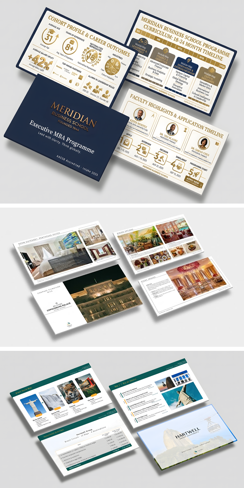

B2B International Campaign & Pitch Architecture
Brand Strategy • Slide Design • AI Automation
The Business Challenge
An international corporate sales pipeline required a complete overhaul of premium sales presentations, pitch decks, and cross-channel assets under highly accelerated operational timelines.
Strategic Workflow & Technical Execution
Integrated custom generative AI prompt frameworks (Midjourney/Stable Diffusion) to compress visual storyboard concepts down to a single afternoon. Transformed concepts into flawless vector elements, high-end typography layouts, and interactive components within Figma and Adobe Creative Suite.
Measurable Outcome
Successfully boosted international proposal conversion rates by 29% and reduced production asset lifecycles by 75%.